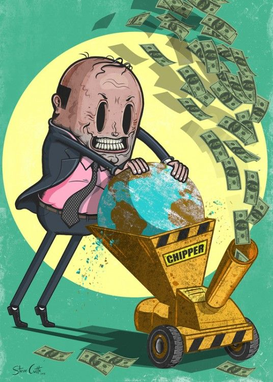

Nuestro proyecto es con las mejores intenciones para el planeta tierra, nustro objetivo principal es tener el mejor lugar posible para nuestras futuras generaciones, este lugar es un planeta sano y seguro, libre de reciduaos toxicos que dañen su calidad de vida, por eso con nosotros en el campo profesional de activismo natural estamos avanzando en la batalla contra la contaminación
Nuestro pricipal problema a resolver es la alta contaminacion en el mundo y crear procesos sustentables de produccion de industria pesada y alimentos, nuestra organizacion busca criminales y eco terroristas para que nuestros esfuerzos tengan una garantia de tener un futura y que sean proyectos permanentes y dar opinion publica a diversos periodistas ecologicos que esten luchando contra gobiernos corruptos alrededor del mundo

Tenemos como meta tener un mundo limpio antes del año 2044, esta fecha no es flexible ni negociable porrque muchas estimaciones señalan que en el año 2050 el daño ecologico sera irremediable en el mundo, por eso debemos tomar acciones extremas contra este enemigo tan grande que es la contaminacion, nuestra arma principal y mas importante es la colaboracion humana, nuestra organizacion no es nada sin ella.
Una solucion que ofrecemos para resolver esta problematica del siglo XXI es el impulsar reformas y decretos con la ONU que incite a los paises firmar acuerdos de reconozimiento de sanciones en caso de que los requisitos ambientales no se cumplan, similar a los acuerdos de paris pero con sanciones mas graves debido a que el problema crecio y las sanciones debem de crecer
Otra solucion para este problema es incentivar a las personas a colaborar en equipo, colocariamos campañas que inciten a que se realize una colaboracion internacional, no es lo mismo decir que tenemos que limpiar 10 millones de toneladas de basura a decir que tenemos que recoger 5 objetos contaminantes cada quien ya que la tarea se hace mucho mas rapida y mas facil si la vemos individualmente, ese seria un ejemplo de como ejecutaremos estos inentivos de colaboracion humana